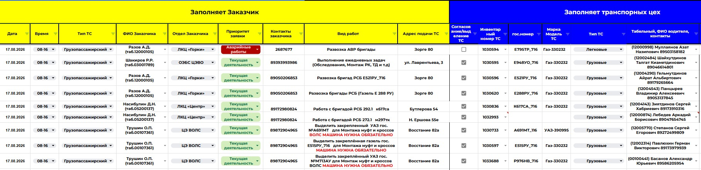
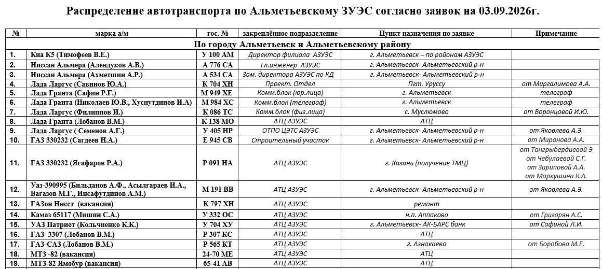
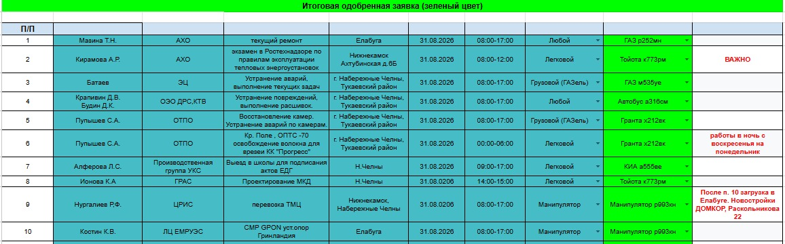
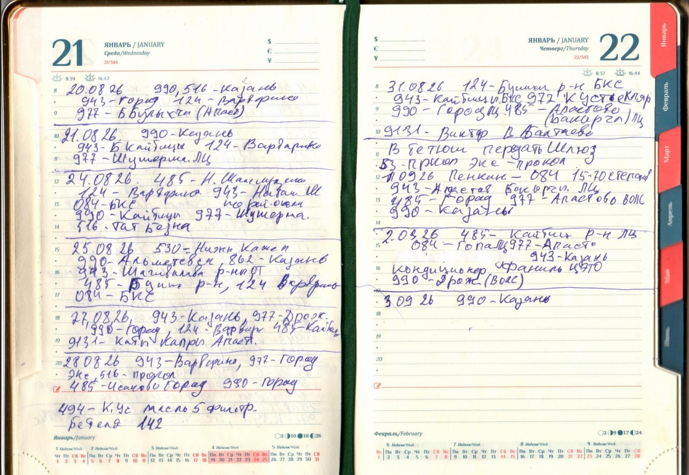
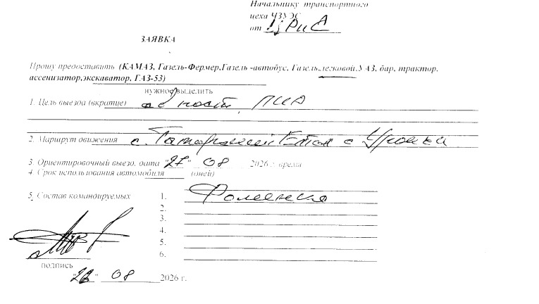
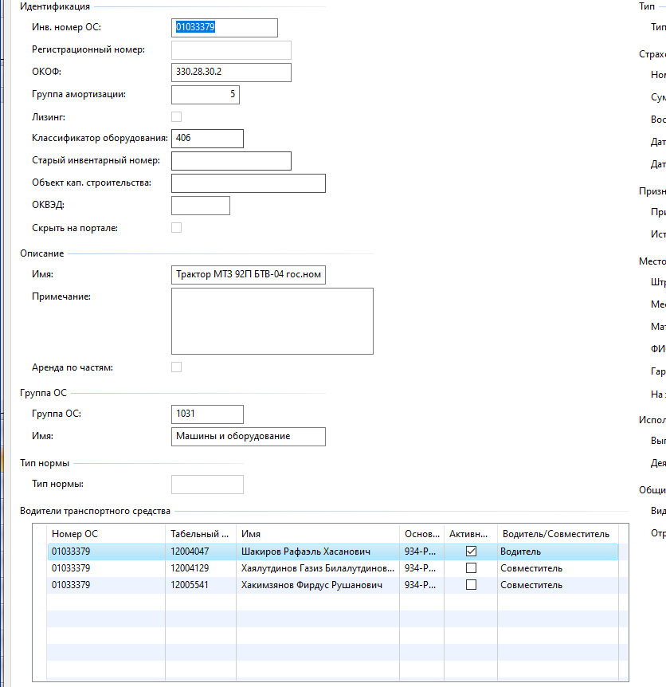

Заполняет и отправляет
Указывает параметры поездки, выбирает автомобиль и смотрит результат в своих заявках.
ПАО «Таттелеком» / транспорт и механизация
Как подразделения запрашивают транспорт,
а ответственные распределяют технику
Данные на 05.11.2026
Работа филиалов / 1 из 5
Заявка и распределение
в Google Таблицах
Порядок работы по исходной презентации. Численность парка актуализирована на слайде 2.

Работа филиалов / 2 из 5
Подписанная заявка.
Ежедневный план в Word

Работа филиалов / 3 из 5
Таблица заявок
и решение начальника цеха
Порядок работы по исходной презентации. Численность парка актуализирована на слайде 2.

Работа филиалов / 4 из 5
Бумажный учёт
и утренняя планёрка

Работа филиалов / 5 из 5
Бланк в приёмной.
Согласование в конце дня

Подготовка системы / по истории проекта
Идея заявочной системы развивалась вместе с подготовкой учётных данных.

Заявитель / модератор / водитель
Дата и время
Адрес и вид работ
Выбор автомобиля
Номер и статус «Новая»
Очередь нужного ЗУЭС
Автомобиль и водитель
Доменный логин водителя
Одобрить и назначить ТС
Отклонить или отменить
Видит решение в системе
и получает уведомление
Получает назначение:
автомобиль, адрес и время
Доступ сотрудника / панель заявок
Указывает параметры поездки, выбирает автомобиль и смотрит результат в своих заявках.
Работает с очередью своего ЗУЭС. При одобрении назначает транспорт и водителя.
Административная панель
Назначает сотруднику роль и разрешённые действия.
Определяет, заявки каких подразделений можно просматривать и обрабатывать.
Корпоративный вход определяет сотрудника. Сервер проверяет права при каждом действии.
Техническая часть / предоставленный репозиторий
user и модератор
Next.js
Пользователи и доступы
Next.js
REST и SSE
Корпоративный OIDC-вход
Casbin: права и очереди
Заявки и назначения
Единая проверка действий
Заявки, сотрудники, роли,
события и статусы доставки
Очередь уведомлений
Workers → TrueConf и web
Техническая часть / хранение и развёртывание
requests — заявка и назначенный транспорт
users / profiles — сотрудники
roles / casbin_rule — права
request_queue_permissions — очереди
realtime_events — события после сохранения
notification_events — уведомления
notification_deliveries — результат отправки
Redis хранит очередь, PostgreSQL — бизнес-данные.
Контейнеры Docker под управлением Coolify. PostgreSQL подключается через DATABASE_URL.
Адрес рабочего сервера и PostgreSQL не задан в предоставленном репозитории.
Схема и миграции: packages/database/prisma.
Взаимодействие команд
Совместная работа над проектом заявочной системы.
Взаимодействие при подготовке учётных данных и интеграции с Axapta.
Следующие этапы развития
Собрать транспорт в понятный каталог для выбора.
Добавить фото конкретных автомобилей в карточки витрины.
Определить критерии оценки и показывать результат работы с заявками.
Собрать показатели заявок, доступности и использования транспорта.